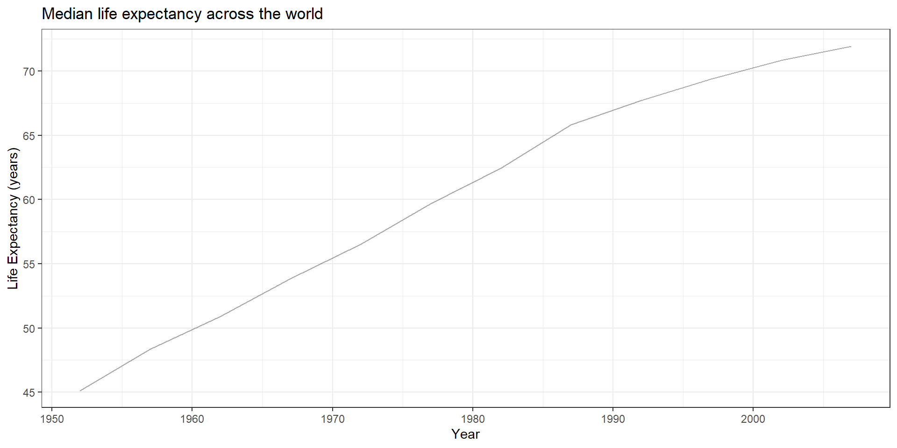
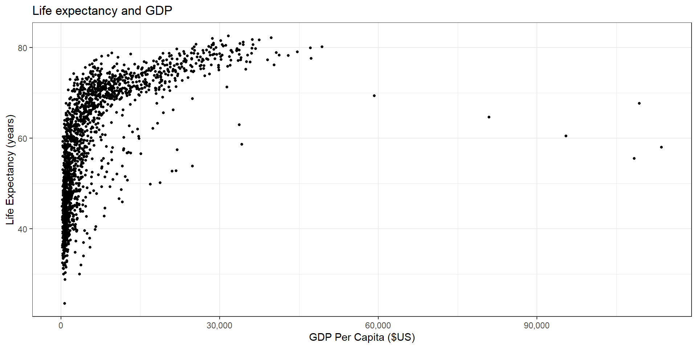
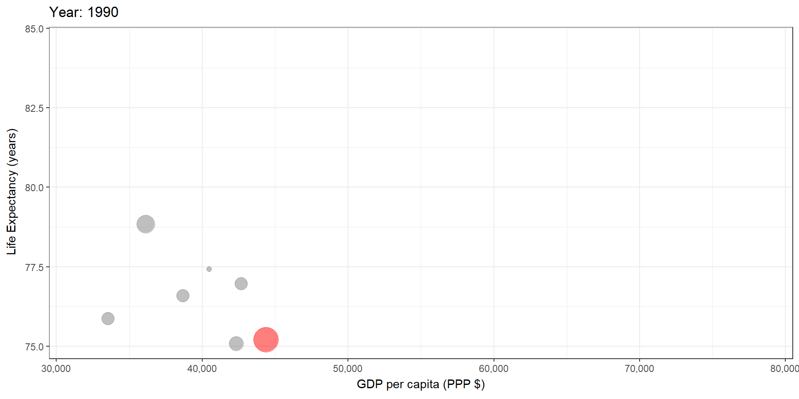
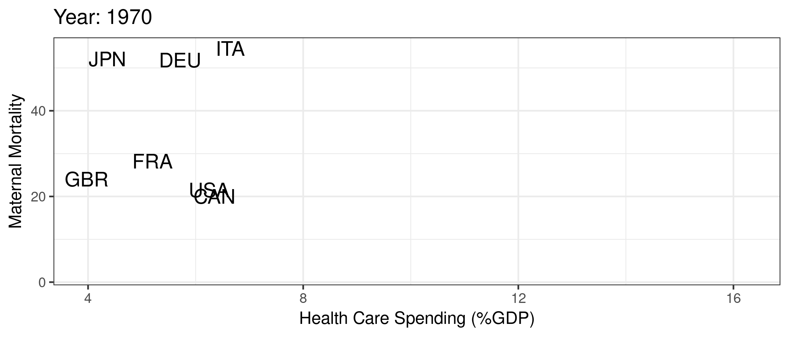
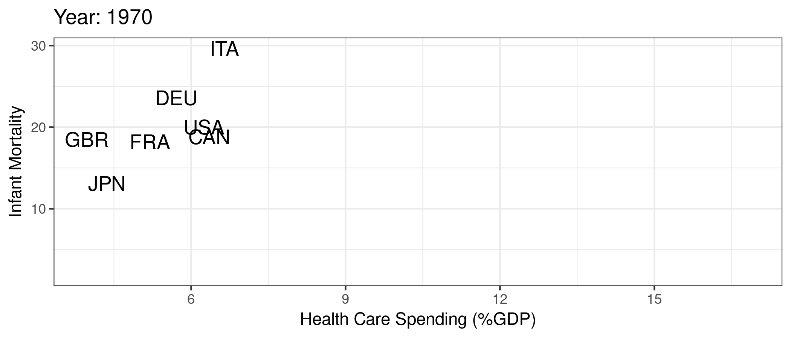

Introduction: Why Supply-side Health?
ECON 372 · Economics of Health Care Markets
Emory University
Table of contents
Motivation
Course Overview
Class Goals
I have two goals for today’s class:
- Motivate the course: Why the U.S. health care system is an interesting case and why people should study it
- Overview of course structure and broad content
Motivation: The U.S. Paradox
Health Improvements
Major improvements in life expectancy (and many other measures of health) across the world
- Poverty reduction
- Technology development and innovation
- Technology diffusion and adoption
- Access to better services, including health care
Health Improvements

Health and Wealth

Health and Wealth
R Code
ggplot(gapminder, aes(gdpPercap, lifeExp, size = pop)) +
geom_point(alpha = 0.5, show.legend = FALSE) +
scale_colour_manual(values = country_colors) +
scale_size(range = c(2, 12)) +
scale_x_log10() +
facet_wrap(~continent) +
labs(title = 'Year: {frame_time}', x = 'Log GDP Per Capita ($US)', y = 'Life Expectancy (years)') +
transition_time(year) +
ease_aes('linear') +
theme_bw()
But the U.S. is unique
R Code
mycolors <- c("US" = "red", "other" = "grey50")
gapminder %>% filter(country %in% c("Canada", "France", "Germany", "Italy", "Japan", "United Kingdom", "United States")) %>%
mutate(highlight = ifelse(country=="United States", "US", "other")) %>%
ggplot(aes(gdpPercap, lifeExp, size = pop)) +
geom_point(alpha = 0.5, show.legend = FALSE, aes(color=highlight)) +
scale_color_manual("U.S.", values = mycolors) +
scale_size(range = c(2, 12)) +
scale_x_comma(limits=c(0,55000)) +
labs(title = 'Year: {frame_time}', x = 'GDP Per Capita ($US)', y = 'Life Expectancy (years)') +
transition_time(year) +
ease_aes('linear') +
theme_bw()
The U.S. “Paradox”
- World leader in health care spending
- World leader in medical innovation
- Poor health outcomes on average
Health Care Spending and Outcomes

Health Care Spending and Outcomes

What does that mean?
- Are we just woefully inefficient?
- The right answer is probably more complicated
- U.S. very good in some areas (breast cancer treatment, interventional cardiology)
- Let’s look at some more graphs from the Commonwealth Fund
So why is the US so different?
Some common arguments:
- Poor health
- Overutilization
- High physician salaries
- Fraud
- Administrative waste
So why is the US so different?
The real culprit(s):
- Administrative waste
- Prices! (outcome of many underlying factors including information problems, fragmentation, policy, etc.)
- Some fraud
Rephrasing of the Problem
We have an “access” problem in the U.S. In many ways, we “overprovide” care to some people and underprovide care to lots of other people. We are particularly bad at helping the least healthy among us. These issues are very closely related to other economic problems and inequality in general.
Turning to this course…
Why economics?
Lots of interesting economic issues in health care, not all unique to the US.
- Extremely heterogeneous products
- Asymmetric information between patients and physicians
- Unobservable quality (experience good)
- Unpredictable need (inability to shop in many cases)
- Distortion of incentives due to insurance
- Adverse selection (asymmetric information between patients and insurers)
Why economics?
- These factors exist in other markets and in other countries, but…
- Health care is unique in the combination of these issues
- U.S. is unique in the extent of these issues in health care (policy problems)
Course Overview
We study U.S. health care through the patient’s journey:
- Insurance – choosing a plan
- Adverse selection, moral hazard, market design
- Physicians – visiting a doctor
- Agency problems, financial incentives, quality of care
- Hospitals – receiving care
- Pricing, insurer negotiations, consolidation
- Prescription Drugs – patents, generics, FDA regulation, innovation
Learning Goals
By the end of this course, you will be able to:
- Explain the structure and history of the U.S. health care system
- Model adverse selection in insurance and connect to data
- Analyze physician incentives and agency problems
- Describe hospital pricing and insurer negotiations
- Summarize key features of prescription drug markets
- Apply data to assess hospital policies in practice
Assignments & Logistics
- Class participation – 50 pts (check-in and questions on lecture days)
- Panel – 45 pts (as a panelist when drawn, plus audience questions)
- Simulations – 25 pts (in-class games, best 5 of 7)
- Quizzes – 60 pts (in-class, best 5 of 6)
- Midterm – 60 pts (one in-class exam, Thursday 11/19)
- Empirical homework – 60 pts (best 2 of 3)
Total = 300 points (about 80% earned in class)
Class meets: Tues/Thurs, 2:30–3:45pm, New Psychology Building 225
Office Hours: Thursdays, 1–2pm, RRR 418 (by appointment)
Nuts and Bolts
- Class Website – slides, notes, assignments, data
- Commons – our in-class app: check-in, quizzes, polls, panels, and simulations
- Canvas – readings, grades, announcements, private info (e.g., Zoom links)
- Teaching Assistant – Shirley Cai
- Data & Software – R or Python, with an AI coding assistant (GitHub Copilot, free via Emory)
- Office Hours – Prof. McCarthy, Thursdays 1–2pm, RRR 418 (sign up online)
Closing
Takeaways from Today
- The U.S. spends the most on health care yet underperforms on many outcomes.
- Economics explains this paradox: incentives, information, and market structure matter.
- This course equips you with the tools to analyze these problems and evaluate policy solutions.